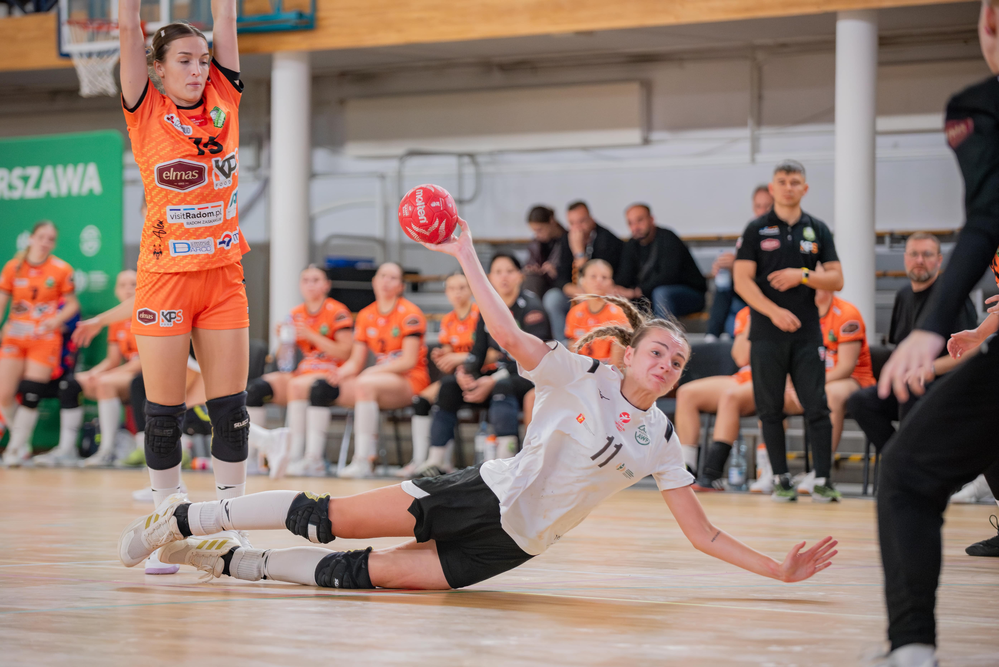
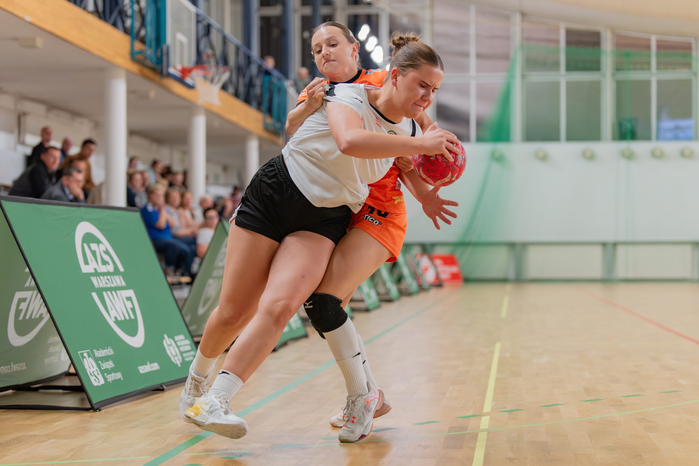
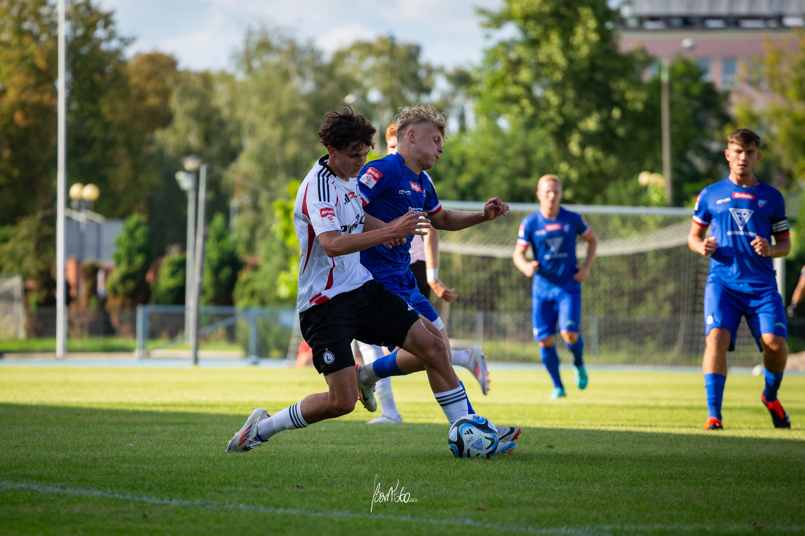
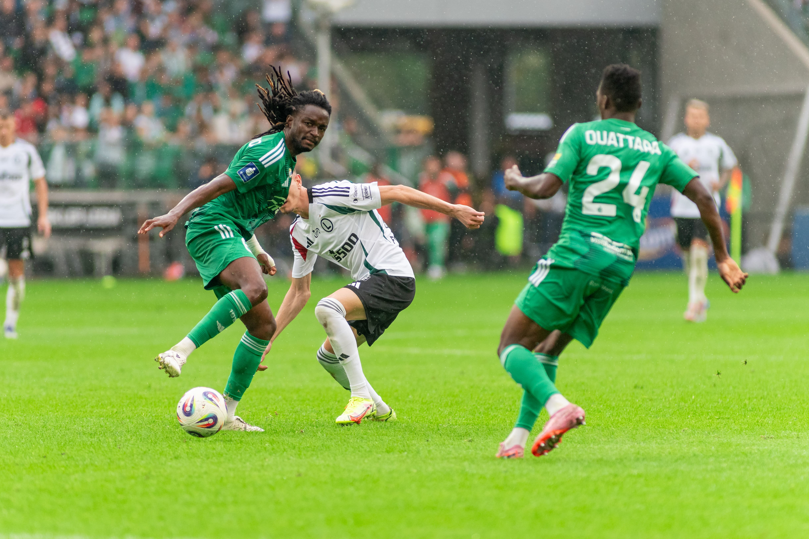
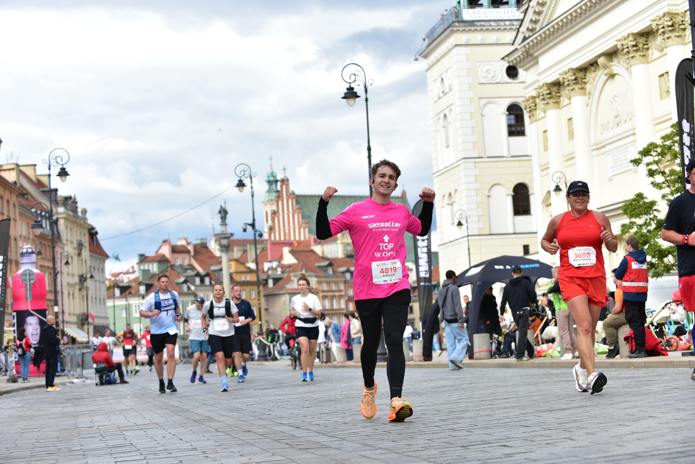
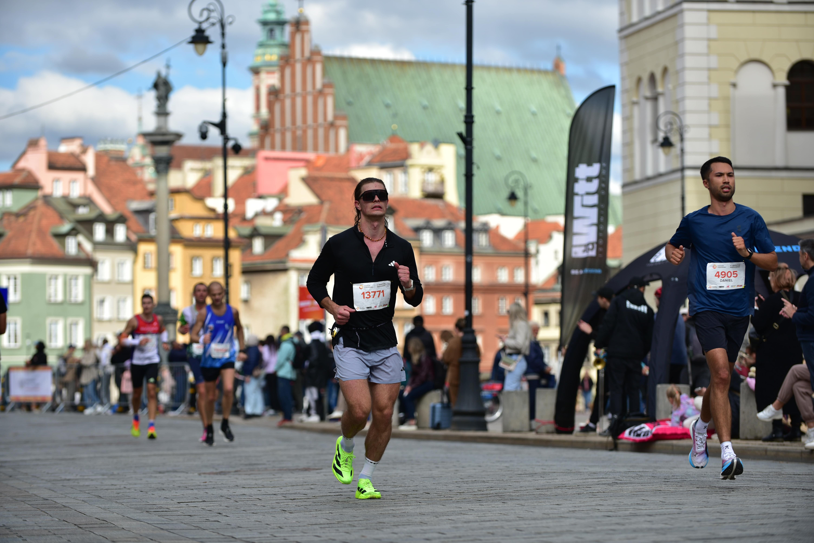
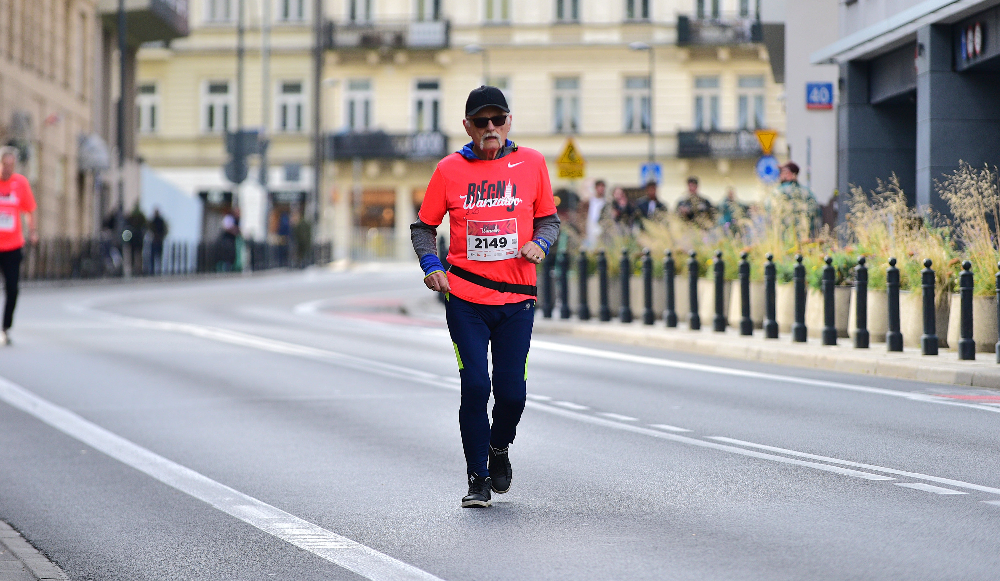
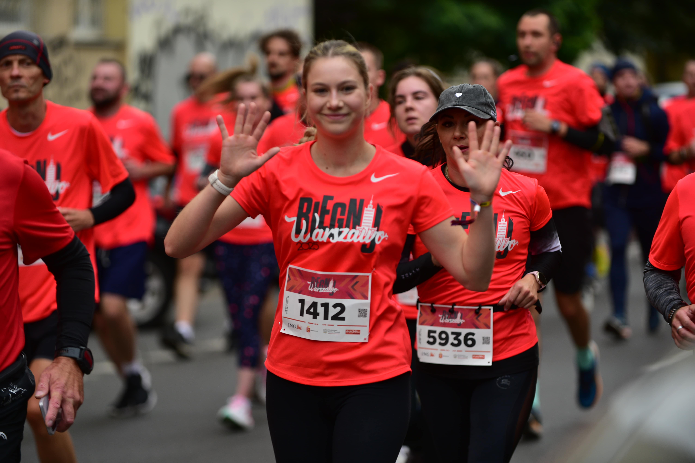

Sport
Galeria sportowa — dynamiczne ujęcia, ostre momenty i emocje stadionów.
Fotografia sportowa to dla mnie połączenie dynamiki, emocji i chwili. Staram się uchwycić nie tylko samą akcję, ale też napięcie i pasję zawodników — te krótkie momenty, które decydują o wszystkim. Jednocześnie spełniam swoje marzenie o zwiedzaniu stadionów piłkarskich.

AZS AWF Warszawa - walka do samego końca

AZS AWF Warszawa - sekcja damska

Broń Radom - Legia II Warszawa

Legia Warszawa - Radomiak Radom

47. Nationale Nederlanden Maraton Warszawski

47. Nationale Nederlanden Maraton Warszawski

Biegnij Warszawo

Biegnij Warszawo

Tenis Stołowy - AZS Warszawa

Tenis Stołowy - AZS Warszawa